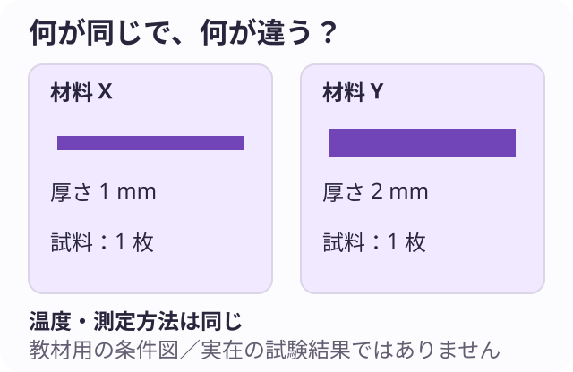
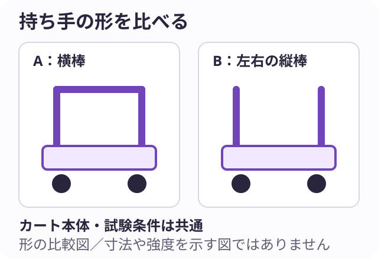
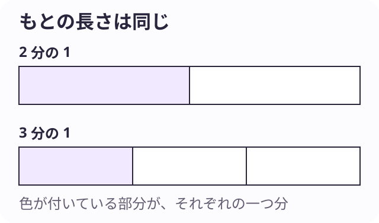

ミライシーン：20体験の原稿一覧
batch-007 ／ 二段階の確認記録あり ／ 60シーン・180選択肢
JSONから作成した閲覧用資料です。利用者向けの公開ページではありません。各案に正解・不正解を付けず、期待できることと残る課題を比較します。資料確認・自己レビューと、実務経験者の確認・公開承認は別です。
出典と確認記録 ／ 職種と内容の二段階チェック ／ 回答ごとの確認理由
医療 ／ 医師（内科医） ／ physician-consultation-story
「なんとなく不調」を、診察の手がかりに。
患者の話と診察の情報をつなぎ、分かっていることを伝える。
SCENE 1 / 3 · scene-1
「いつもと違う」を聞く。
あなたは内科医です。診察で患者が「最近、なんとなく調子が悪い」と話しました。急いで対応すべき状態がないかの確認を進めたうえで、詳しく話を聞く場面です。患者は何から話すか迷っています。
話を整理する入口は？
A．始まった頃から順に聞く
いつ気づき、その後どう変わったか、思い出せる範囲で聞きます。
期待できること：変化の流れを捉える手がかりになります。
懸念点・確認すること：日付を無理に決めず、思い出せない部分は不明として残します。
B．普段できることで困った点を聞く
通学や仕事、食事など、いつもと違う具体的な場面を尋ねます。
期待できること：本人にとっての不調の大きさを知る助けになります。
懸念点・確認すること：生活の困りごとだけで身体の状態を判断せず、症状も確認します。
C．一番気になっていることから聞く
今いちばん心配なことを本人の言葉で話してもらい、必要な点を聞き足します。
期待できること：医師と患者が何を心配しているかを共有できます。
懸念点・確認すること：心配の強さと病気の重さは同じではなく、ほかの症状も確認します。
仕事の視点：患者の表現を診察に必要な情報へつなげます。
仕事とのつながり：問診による情報収集に対応。緊急度確認を共通前提とし、病名や治療の選択を利用者に求めない。
感想ボタン：曖昧な言葉から手がかりを探す「うまく言えない不調でも、聞き方で伝えやすくなるのかも。」相手の言葉を一緒に整理するところが気になったのかもしれません。
SCENE 2 / 3 · scene-2
分かったこと、まだ分からないこと。
診察と必要な確認を経て、この患者には追加の検査を提案する方針です。患者は「まだ病気が分からないんですか」と不安そうです。検査の目的・負担・結果を伝える時期を説明する必要があります。
説明をどう組み立てる？
A．今ある情報と確認したい点を並べる
診察で分かった範囲と、追加で調べたいことを区別して話します。
期待できること：検査で何を確かめるのかをつかみやすくなります。
懸念点・確認すること：情報を並べるだけで終えず、患者がどう受け止めたかも聞きます。
B．検査を受ける流れから説明する
目的を示してから、準備・当日の流れ・結果を伝える予定を説明します。
期待できること：先の見通しを持ちやすくなります。
懸念点・確認すること：手順の説明だけで理由や負担が埋もれないようにします。
C．患者の疑問を一つずつ確かめる
何が不安なのかを聞き、答えながら必要な説明を補います。
期待できること：本人の心配と説明を結び付けられます。
懸念点・確認すること：質問が出なかった項目も必要なら医師から説明します。
仕事の視点：不確実な点と次の確認を共有します。
仕事とのつながり：内科医による検査の必要性と方針の説明。特定の検査の適応を設定しない。
感想ボタン：分からないことも伝える「すぐに答えが出なくても、次に何を調べるか分かると受け止めやすそう。」説明の順序に関心を持ったのかもしれません。
SCENE 3 / 3 · scene-3
診察室を出たあとも。
患者への説明が終わり、次の連絡方法や受診の目安を、医師としてこの患者の状態に合わせて伝えました。最後に「家で困らずに動けそうか」を確かめる時間です。次の予定を言葉と短いメモで確認できます。
どこから理解を確かめる？
A．次にすることを言葉で確かめる
「帰宅後の予定を、どう理解されたか教えてください」と尋ねます。
期待できること：医師の説明と患者の理解のずれを見つけやすくなります。
懸念点・確認すること：覚えて言えるだけで実行できるとは限らず、困りごとも聞きます。
B．生活の中で難しそうな点を聞く
仕事や移動など、説明された予定を守るうえで困りそうなことを聞きます。
期待できること：実行上の障害を見つけ、対応を相談できます。
懸念点・確認すること：生活に合わせるために必要な医療上の確認を省きません。
C．持ち帰るメモを一緒に読む
次の予定や連絡先を短くまとめ、患者と内容を確かめます。
期待できること：後から確認する手がかりを持ち帰れます。
懸念点・確認すること：メモを渡しただけで理解したとみなさず、不明点を聞きます。
仕事の視点：患者が次の行動を理解できたか確かめます。
仕事とのつながり：患者・家族への丁寧な説明と生活への助言の範囲。具体的な受診基準や医療助言は教材に載せない。
感想ボタン：説明を暮らしにつなげる「診察が終わってからのことまで、一緒に考えるんだ。」医療と毎日の暮らしがつながる部分が気になったのかもしれません。
学びとのつながり：体の仕組みや病気を学ぶ医学は、患者の話と診察・検査の情報を結んで考える土台になります。
厚生労働省 job tag「内科医」（本文確認：2026-11-10）
原稿一覧へ戻る
医療 ／ 看護師 ／ nurse-rest-environment
「休めない」の理由を、一緒に探す。
入院中の過ごし方を聞き、その人に合う療養環境を考える。
SCENE 1 / 3 · scene-1
夜、何が気になる？
あなたは病棟の看護師です。患者が「昨夜はよく休めなかった」と話しました。体調や痛みなど必要な確認を行い、医療上の対応と並行して、休息の妨げになった環境や気持ちを詳しく聞きます。
話を聞く入口は？
A．眠れなかった時間帯を聞く
寝つくまでと途中で目が覚めた時を分け、何があったか尋ねます。
期待できること：妨げになった場面を具体的に捉えられます。
懸念点・確認すること：覚えていない時間を推測で埋めず、夜間の記録も参考にします。
B．家で休むときの習慣を聞く
普段の明るさや過ごし方と、病室で困る点を聞きます。
期待できること：本人になじむ工夫を探す手がかりになります。
懸念点・確認すること：自宅の環境をすべて再現できると約束せず、病棟の条件を確認します。
C．今いちばん気になることを聞く
休む前に考えてしまうことや、気がかりを話せる範囲で尋ねます。
期待できること：環境以外の困りごとにも気づけます。
懸念点・確認すること：話したくないことを無理に引き出さず、必要時は他職種にも相談します。
仕事の視点：体調の確認と本人の感じ方を合わせます。
仕事とのつながり：看護師の休息への支援と状態観察に対応。症状評価を飛ばして環境だけを扱わない。
感想ボタン：いつもの暮らしとの違いを知る「静かなら休める、と決める前に本人に聞くんだ。」その人の感じ方を知るところに関心が向いたのかもしれません。
SCENE 2 / 3 · scene-2
明かりを、どう整える？
患者は「廊下の明かりが気になる。でも真っ暗だと不安」と話しました。病棟で認められた照明調整とカーテンの使い方を試せます。観察や必要なケア、ほかの患者の安全を保ったうえで本人と相談します。
調整をどう進める？
A．照明を段階的に試してもらう
許可された範囲で明るさを変え、本人の感じ方を聞きます。
期待できること：言葉だけでは伝えにくい好みを確かめられます。
懸念点・確認すること：試す間に負担をかけすぎず、必要な観察への影響も確認します。
B．光が届く位置を一緒に確かめる
どの方向の光が気になるかを確認し、使えるカーテンなどを調整します。
期待できること：必要な明かりを残しながら工夫を考えられます。
懸念点・確認すること：視界や移動を妨げないか、配置後に確認します。
C．夜間のケアの見通しを伝える
必要な訪室や確認について説明し、配慮できる点を相談します。
期待できること：明かりがつく理由を知り、心構えを持てることがあります。
懸念点・確認すること：説明だけで我慢を求めず、照明の調整も検討します。
仕事の視点：患者の希望と療養環境の条件をすり合わせます。
仕事とのつながり：看護による療養環境の調整。設備操作の具体手順は示さず、病棟の安全条件を前提にする。
感想ボタン：安心できる環境を一緒につくる「少し明るさを変えるだけでも、人によって受け止め方が違いそう。」細かな調整が気になったのかもしれません。
SCENE 3 / 3 · scene-3
次の看護師にも伝わる記録へ。
患者と環境を調整したあと、本人は「昨夜より落ち着けた」と話しました。ただし一晩の感想で、睡眠の状態が改善したとは断定できません。次の看護師へ、行ったケアと本人の反応を引き継ぎます。
記録の軸にしたいのは？
A．本人の言葉と観察を分けて書く
本人の発言と、訪室時に確認できた様子を区別します。
期待できること：伝聞と観察の違いが読み取れます。
懸念点・確認すること：観察できなかった時間の様子まで書き足しません。
B．行った調整と反応を対応させる
どの環境をどう整え、どんな反応があったかを組にして残します。
期待できること：次の看護師が同じ条件を確認しやすくなります。
懸念点・確認すること：反応の理由がその調整だけにあるとは断定しません。
C．次に確認する点を添える
今夜も同じ希望か、別の困りごとがないかを引き継ぎに加えます。
期待できること：本人の状態に合わせてケアを続けられます。
懸念点・確認すること：確認事項だけでなく、現状と実施した対応も残します。
仕事の視点：感想と観察を分けて支援を継続します。
仕事とのつながり：看護師間の状態・ケアの共有。睡眠改善の因果や効果は断定しない。
感想ボタン：小さな反応を次のケアへつなぐ「一度の『よかった』を大切にしながら、まだ様子を見るんだ。」変化を追い続ける仕事に引かれたのかもしれません。
学びとのつながり：看護では体の状態を理解する知識と、療養中の暮らしを支える方法を学びます。観察と対話の両方が手がかりになります。
厚生労働省 job tag「看護師」（本文確認：2026-11-10）
原稿一覧へ戻る
医療 ／ 薬剤師 ／ pharmacist-medication-conversation
薬の説明を、その人の言葉へ。
薬の確認と対話を通して、使い方の疑問を整理する。
SCENE 1 / 3 · scene-1
「ほかにも飲んでいたかも」。
あなたは薬局の薬剤師です。処方内容と患者の情報を確認する中で、患者が「家で使っている薬がほかにもあるかも」と話しました。名称が分からないため、必要な確認が済むまで調剤の判断を保留します。
情報を確かめる入口は？
A．お薬手帳などの記録を一緒に見る
手元の記録から薬の名称と使っている時期を確かめます。
期待できること：記憶だけに頼らず情報を確認できます。
懸念点・確認すること：記録にない市販薬などもあり、載っている分だけで完了としません。
B．現物や名称が分かる資料を頼む
本人が用意できる範囲で、包装や薬の名称が読める資料を確認します。
期待できること：どの製品かを確認する手がかりになります。
懸念点・確認すること：見た目の似た薬を同じと決めず、正式な情報と照合します。
C．入手先と使っている状況を聞く
どこで受け取り、今も使っているかを聞き、照会すべき先を整理します。
期待できること：追加確認が必要な場所を絞れます。
懸念点・確認すること：入手先だけで薬の種類は決まらず、名称などの確認も必要です。
仕事の視点：不明点を残したまま薬の判断を進めません。
仕事とのつながり：併用薬・処方確認の範囲。照会や個別の薬の変更を利用者に判断させない。
感想ボタン：分からない情報を確かめる「『たぶん大丈夫』で進めず、何を使っているか一緒に探すんだ。」確認を積み重ねるところが気になったのかもしれません。
SCENE 2 / 3 · scene-2
説明、どこから始める？
必要な照会を含む確認が済み、処方に基づいて薬を渡す場面です。患者が「説明を聞いても、家で使うときに迷いそう」と話しました。薬ごとに定められた使い方を変えず、伝え方を考えます。
使い方を伝える入口は？
A．薬と説明書を対応させて見せる
どの薬について話しているかを示しながら、必要な注意を説明します。
期待できること：説明と手元の薬を結び付けやすくなります。
懸念点・確認すること：外見だけで覚えさせず、名前や表示も一緒に確認します。
B．本人の一日の流れを聞いて説明する
生活の予定を聞き、指示された使い方で困りそうな場面を確かめます。
期待できること：実際に使うときの疑問が見つかりやすくなります。
懸念点・確認すること：困難があっても自己流で指示を変えず、必要な相談につなげます。
C．本人の言葉で説明を確かめる
「どのように使うと理解されたか」を教えてもらい、伝わりにくい所を補います。
期待できること：誤解に気づいて、その場で説明し直せます。
懸念点・確認すること：テストのように責めず、薬剤師の伝え方を調整するために聞きます。
仕事の視点：薬の内容を変えず、説明の方法を調整します。
仕事とのつながり：個人に合わせた服薬指導に対応。用量・時刻の具体的助言は教材に含めない。
感想ボタン：知識を使える説明にする「説明が正しくても、家で思い出せるかは別なんだ。」知識を相手に届ける工夫が気になったのかもしれません。
SCENE 3 / 3 · scene-3
相談できる先を持ち帰る。
説明後、患者は「飲み始めてから疑問が出たらどうしよう」と話しました。薬剤師として、この患者に必要な注意や相談方法を説明し、薬局の連絡先が載った資料を渡せます。
相談しやすくする工夫は？
A．連絡先と相談できる時間を確かめる
資料の連絡先を一緒に見て、対応時間と時間外の案内を説明します。
期待できること：必要なときに連絡する場所を探しやすくなります。
懸念点・確認すること：連絡先を知るだけでは足りず、個別に必要な注意も説明します。
B．相談するときの情報を伝える
薬の名前や使った時期など、分かる範囲で伝えてほしい情報を説明します。
期待できること：相談を受ける薬剤師が状況をつかみやすくなります。
懸念点・確認すること：情報をそろえるまで相談してはいけないと思わせないようにします。
C．残った質問を一緒にメモする
今は言葉にしにくい疑問も含め、本人が気になる点を整理します。
期待できること：本人が何を聞きたいか思い出しやすくなります。
懸念点・確認すること：メモだけで解決済みにせず、その場で答えられる点は説明します。
仕事の視点：継続して相談できる関係をつくります。
仕事とのつながり：薬に関する相談業務に対応。緊急時対応や副作用の見分け方を一般化しない。
感想ボタン：説明のあとも相談を支える「聞いたときには分からなかった疑問も、あとで相談できると安心しそう。」使い始めたあとの関わりに関心を持ったのかもしれません。
学びとのつながり：薬学では薬の性質や体への働き、安全な使い方を学びます。知識を、その人が理解できる説明へつなげる仕事でもあります。
厚生労働省 job tag「薬剤師」（本文確認：2026-11-10）
原稿一覧へ戻る
福祉 ／ 介護福祉士 ／ care-worker-daily-choice
手伝う前に、「どうしたい？」。
日常の小さな選択を尊重し、その人の暮らしを支える。
SCENE 1 / 3 · scene-1
今日の服を選ぶ時間。
あなたは介護施設で働く介護福祉士です。利用者が着替えの前に「今日は何を着ようかな」と迷っています。体調や必要な介助は確認済みで、本人が選べる時間があります。手元には着られる服が数枚あります。
選ぶ手助けをするなら？
A．服を見比べやすく並べる
本人が見やすい位置に服を並べ、好みを聞きます。
期待できること：言葉だけで思い浮かべず、実物から選べます。
懸念点・確認すること：並べる数が多すぎると迷いが増えるため、本人の様子に合わせます。
B．今日の予定を一緒に思い出す
食堂や部屋での過ごし方を話し、服を選ぶ手がかりにしてもらいます。
期待できること：本人の暮らしと選択を結び付けられます。
懸念点・確認すること：予定に合う服を介護福祉士が一方的に決めないようにします。
C．気分や好きな色を聞いてみる
「今日はどんな気分ですか」など、本人が話しやすいことから尋ねます。
期待できること：好みを知り、選択を支える会話ができます。
懸念点・確認すること：いつもの好みと今日の希望が同じとは限りません。
仕事の視点：意思を聞き、選びやすい環境を整えます。
仕事とのつながり：本人の自立と日常生活を支える施設介護。診断や身体介助の技法を出題しない。
感想ボタン：本人の選ぶ時間を支える「手伝うって、代わりに決めることだけじゃないんだ。」本人が決められるようにする関わりが気になったのかもしれません。
SCENE 2 / 3 · scene-2
「今日は見ていたい」。
午後の活動で、利用者が「作るのはせず、今日は見ていたい」と話しました。体調の確認と必要な対応は行っています。見る参加や途中退出もできる活動で、本人がどう過ごしたいかを相談します。
参加の仕方をどう支える？
A．見やすい場所を本人と選ぶ
見て過ごしたいという希望に合わせ、落ち着ける位置を相談します。
期待できること：作業をしなくても場を共有できます。
懸念点・確認すること：周りに合わせて座ることを強制せず、途中の希望も聞きます。
B．見ながら話したいか尋ねる
作っている物について話すか、静かに見たいかを本人に選んでもらいます。
期待できること：会話の量も含めて希望に近づけられます。
懸念点・確認すること：返答が少ないことだけで関心がないと決め付けません。
C．別の過ごし方も選べると伝える
見学を続けるほか、部屋で過ごすなど利用できる方法も伝えます。
期待できること：参加しなければいけないという圧力を減らせます。
懸念点・確認すること：移動や見守りなど、必要な支援は他の介護職員と調整します。
仕事の視点：活動への参加を本人が選べるようにします。
仕事とのつながり：レクリエーションやコミュニケーション支援の範囲。活動参加を強制せず、状態確認を別途行う。
感想ボタン：参加しない気持ちも受け止める「誘えば喜ぶとは限らず、見るだけの日もあるよね。」その日の意思に合わせる部分が気になったのかもしれません。
SCENE 3 / 3 · scene-3
好きなことを、決め付けずに残す。
夕方、朝に選んだ服を見ながら利用者が「今日はこの色がよかった」と話しました。午後は活動を見て過ごしました。次の介護職員へ、本人の希望や過ごし方を記録で伝えます。
どんな書き方を軸にする？
A．本人の言葉と場面を残す
発言した時間や状況とともに、本人が選んだことを書きます。
期待できること：次の介護職員が判断の背景を理解できます。
懸念点・確認すること：発言から本人の気持ちを推測した部分は事実と分けます。
B．選びやすかった支援を書く
服の見せ方など、選択の際に使った支援と反応を残します。
期待できること：次の支援方法を考える参考になります。
懸念点・確認すること：同じ方法が毎回合うと決めず、本人の状態を確かめます。
C．次に本人へ聞きたい点を添える
明日の服や活動について、改めて希望を聞く点を書きます。
期待できること：過去の希望に固定せず、選び直す機会を保てます。
懸念点・確認すること：確認予定だけにせず、今日の支援内容も記録します。
仕事の視点：記録を使って本人の意思を継続して確かめます。
仕事とのつながり：介護記録と職員間連携に対応。嗜好や意欲を一日の観察で固定しない。
感想ボタン：その日の選択を丁寧に引き継ぐ「好きなことも、毎日同じとは限らないんだ。」一度知って終わりにせず、関わり続ける点に興味が向いたのかもしれません。
学びとのつながり：介護・福祉では、体の状態と本人の希望を理解し、生活を支える方法を学びます。できることを大切にする視点にもつながります。
厚生労働省 job tag「施設介護員」（本文確認：2026-11-10）
原稿一覧へ戻る
医療事務 ／ 医療事務 ／ medical-clerk-visit-guidance
初めての受診を、迷わず進める。
受付・記録・会計をつなぎ、患者と医療職を事務から支える。
SCENE 1 / 3 · scene-1
最初はどこへ行けばいい？
あなたは病院の医療事務として外来受付をしています。初めて来た患者が「予約はありますが、次に何をすればいいですか」と尋ねました。本人・予約・健康保険の資格情報などを院内手順で確認し、必要な受付を案内します。
案内を分かりやすくするなら？
A．今してほしいことを一つずつ伝える
必要な受付のうち、現在の手順を短く伝えて完了を確かめます。
期待できること：一度に多くの指示を覚える負担を減らせます。
懸念点・確認すること：先の見通しも必要なので、全体の流れを短く補います。
B．院内の案内図と一緒に説明する
受付後に向かう場所を、用意された図で示します。
期待できること：言葉だけで場所を覚えなくて済みます。
懸念点・確認すること：図の向きや文字が分かるかを確認し、必要なら別の案内をします。
C．全体の流れを示して現在地を伝える
受付・診察・会計の流れの中で、今どの段階かを説明します。
期待できること：次の行動を予想しやすくなります。
懸念点・確認すること：診療によって順番が変わる場合は、その都度案内します。
仕事の視点：院内の流れを患者がたどれる形で案内します。
仕事とのつながり：外来受付と案内業務。保険証等の特定媒体を固定せず、医療判断は医療職へつなぐ。
感想ボタン：初めての人の迷いを減らす「病院では当たり前の順番も、初めてだと分からないよね。」相手がどこで迷うかを考えるところが気になったのかもしれません。
SCENE 2 / 3 · scene-2
記録の食い違いに気づいた。
診療後の会計を確認すると、会計システムの記録と診療側から届いた情報に食い違いがありました。どちらが正しいかはまだ不明です。院内手順に沿って確認を依頼するため、情報を整理します。
確認依頼に添える材料は？
A．食い違う項目を並べる
システムの表示と元の情報を、項目ごとに対応させます。
期待できること：確認が必要な箇所を共有しやすくなります。
懸念点・確認すること：患者を取り違えないよう、院内の本人確認手順も守ります。
B．記録された時点を整理する
各情報がいつ記録・反映されたかを確認依頼に添えます。
期待できること：反映の時間差などを調べる手がかりになります。
懸念点・確認すること：新しい記録なら必ず正しいと判断せず、内容を確認します。
C．確認したい質問を短くまとめる
どの診療情報について何を確認したいかを具体的に書きます。
期待できること：医療職が答えるべき点をつかみやすくなります。
懸念点・確認すること：質問だけでなく、参照する記録の場所も添えます。
仕事の視点：請求の根拠と確認先を明確にします。
仕事とのつながり：診療記録と請求の確認業務。診療行為の有無や請求可否を独断で決めない。
感想ボタン：小さな食い違いを確かめる「数字を直す前に、何が行われたか確かめるんだ。」医療を正確な記録で支えるところが気になったのかもしれません。
SCENE 3 / 3 · scene-3
会計を待つ人へ、どう伝える？
会計の確認に時間が必要で、患者が「まだかかりますか」と尋ねています。完了時刻は確定していません。個別の情報を周囲に聞かせないよう配慮し、確認中の状況を案内します。
待っている人への案内は？
A．確認中の内容を必要な範囲で伝える
会計内容の確認をしていることと、時刻はまだ確定できないことを説明します。
期待できること：待つ理由が分かりやすくなります。
懸念点・確認すること：診療情報や院内の詳しい事情を周囲に広めないようにします。
B．待つ場所と呼び出し方を確かめる
院内で利用できる待機場所を案内し、呼び出しを受け取れるか確認します。
期待できること：何をして待てばよいかの迷いを減らせます。
懸念点・確認すること：離れてよい範囲は院内の運用に従い、勝手に許可しません。
C．次に状況を伝えるタイミングを決める
確認の進み具合を再び知らせる目安を相談します。
期待できること：患者が何度も尋ね直す負担を減らせます。
懸念点・確認すること：連絡の目安と会計の完了時刻を混同させないようにします。
仕事の視点：正確さを保ちながら待ち方を案内します。
仕事とのつながり：窓口応対と会計業務の範囲。未確定の処理時刻や費用を保証しない。
感想ボタン：待つ時間の不安を減らす「待ち時間が同じでも、今どうなっているか分かると違いそう。」手続き中の人への伝え方が気になったのかもしれません。
学びとのつながり：医療事務では、受付や会計、診療報酬の仕組みを学びます。正確な事務処理と、患者へ分かりやすく案内する力がつながります。
厚生労働省 job tag「医療事務」（本文確認：2026-11-10）
原稿一覧へ戻る
研究 ／ 材料研究者（高分子） ／ materials-research-test-conditions
その違いは、材料のせい？
樹脂の試験記録から、比べられる条件と次の実験を考える。
SCENE 1 / 3 · scene-1
同じように曲げた、はずだけど。
あなたは樹脂を研究する材料研究者です。曲がりにくさを比べた予備試験で、材料Xは厚さ1mm、材料Yは2mmでした。各1枚だけで、温度と測定方法は同じです。正式な比較に向け、研究チームで試験計画を立てます。
次の試験を考える入口は？

A．厚さをそろえる計画から考える
材料の種類を比べるため、同じ形と厚さの試料を準備する条件を相談します。
期待できること：材料以外の違いを減らした比較に近づけられます。
懸念点・確認すること：厚さだけでなく、作り方や測定の繰り返しも検討します。
B．同じ材料内のばらつきを確かめる
同じ条件の試料を複数用意し、どの程度結果が変わるか調べる計画を立てます。
期待できること：一度の値だけに頼らず結果を捉えられます。
懸念点・確認すること：材料同士を比較する前には、厚さなどの条件もそろえる必要があります。
C．試料と測定の記録を点検する
厚さ以外にも違いがないか、作成・保管・測定の記録を確認します。
期待できること：計画でそろえるべき条件を洗い出せます。
懸念点・確認すること：記録確認だけでは性能は分からず、必要な試験を行います。
仕事の視点：比べたい要因とそろえる条件を分けます。
仕事とのつながり：高分子材料の物性試験・研究開発に対応。数値と試料は架空で、具体的な試験規格や性能を示さない。
感想ボタン：結果の違いと条件の違いを分ける「数字が違うから材料の性能が違う、とすぐには言えないんだ。」比較の前提を確かめるところが面白いと感じたのかもしれません。
SCENE 2 / 3 · scene-2
一枚だけ、大きく違う値。
研究チームが条件をそろえて複数の試料で試験したところ、材料Yの試料のうち一枚だけほかと離れた値になりました。原因はまだ分かりません。元データを残したまま、測定や試料に何があったかを確かめます。
調べる手がかりは？
A．その試料の作成記録をたどる
識別番号を手がかりに、作成条件や保管の記録を確認します。
期待できること：試料ごとの違いを調べられます。
懸念点・確認すること：記録の違いが見つかっても、それだけで原因とは断定しません。
B．測定時の状況を確認する
装置の記録や測定者のメモから、同じ手順で測れたか確認します。
期待できること：測定条件の影響を検討できます。
懸念点・確認すること：装置に異常が見つからなくても、試料側の要因は残ります。
C．追加の測定計画を相談する
元の結果を残し、別の試料で確かめる条件を研究チームと決めます。
期待できること：同じ傾向が現れるか調べられます。
懸念点・確認すること：期待する結果が出るまで測るのではなく、回数や手順を先に決めます。
仕事の視点：結果を消す前に、説明できる根拠を探します。
仕事とのつながり：材料試験の分析・記録の範囲。外れ値の除外基準を一律に示さない。
感想ボタン：予想と違う値を追いかける「予想から外れた結果にも、理由がありそう。」うまくいかなかったように見えるデータから考えることが気になったのかもしれません。
SCENE 3 / 3 · scene-3
研究会で、どこまで言える？
今回の試験では、確認した条件の範囲で材料ごとの傾向が見えました。別の温度や長く使ったときの状態は調べていません。社内の研究会で、結果と次に確かめたいことを報告します。
報告の組み立て方は？
A．条件と結果を一枚にまとめる
どの試料をどう測ったかと、その結果を対応させます。
期待できること：同じ条件での比較だと読み取りやすくなります。
懸念点・確認すること：平均だけでばらつきが消えないよう、必要なデータも添えます。
B．最初の問いへの答えから話す
何を知りたかったかに戻り、答えられた点と残った点を示します。
期待できること：研究の目的と結果の関係を追いやすくなります。
懸念点・確認すること：答えを短くしすぎて、成立する条件を落とさないようにします。
C．次の確認案と一緒に報告する
今回の結果を示し、温度や使用期間など未確認の点をどう調べるか提案します。
期待できること：研究を続ける判断材料になります。
懸念点・確認すること：新しい案の魅力だけで、今回の限界や不都合な結果を隠しません。
仕事の視点：結論の範囲と次の問いを共有します。
仕事とのつながり：研究結果の共有・開発検討の範囲。用途の適合や耐久性を未測定のまま認定しない。
感想ボタン：分かった範囲を言葉にする「『まだ分からない』をはっきりさせるのも研究なんだ。」答えを急がず、確かめる範囲を広げるところが気になったのかもしれません。
学びとのつながり：化学や材料工学では、材料の構造と性質を学びます。条件を整えて試し、結果の理由を考える研究につながります。
厚生労働省 job tag「高分子化学技術者」（本文確認：2026-11-10）
原稿一覧へ戻る
機械・製造 ／ 機械設計技術者 ／ mechanical-designer-cart-handle
運びやすさを、形から考える。
作業用カートの使われ方を調べ、試作品で確かめる。
SCENE 1 / 3 · scene-1
運ぶ場所から、図面へ。
あなたは機械設計技術者です。工場から「部品を運ぶ手押しカートを使いやすくしたい」と相談がありました。扱う荷物と安全条件は生産側と確認します。図面を描く前に、使われ方を調べる場面です。
最初に詳しく見たいのは？
A．通路と曲がり角を確かめる
安全な観察範囲で、通行幅や方向転換する場所を調べます。
期待できること：寸法や取り回しの条件を整理できます。
懸念点・確認すること：通路だけで決めず、荷物の大きさや重さも確認します。
B．積む・降ろす動きを観察する
作業者がどの位置から荷物に触れるか、工程に沿って確認します。
期待できること：運搬中以外の使いにくさを見つけられます。
懸念点・確認すること：一度の作業だけで普段の動きを代表させないようにします。
C．作業者ごとの困りごとを聞く
体格や担当工程の異なる作業者に、どこで扱いづらいか尋ねます。
期待できること：使う人による違いを設計条件に反映できます。
懸念点・確認すること：感想をそのまま寸法にせず、実物や測定でも確かめます。
仕事の視点：要望を測定や観察で確認できる条件にします。
仕事とのつながり：機械設計の要求確認と仕様検討に対応。安全性の判断を素人の印象だけに任せない。
感想ボタン：形の前に使い方を知る「持ち手を描く前に、どこでどう使うかを見るんだ。」使う人の動きから形を考えるところが気になったのかもしれません。
SCENE 2 / 3 · scene-2
持ち手の形、どう確かめる？
チームで二つの持ち手案を試作しました。Aは横棒、Bは左右の縦棒で、いずれも事前の安全確認を済ませています。試験は定めた荷重・経路で行います。図は形の違いだけを示し、寸法図ではありません。
使いやすさの比較で注目するのは？

A．押すときの手や腕の位置を見る
決めた経路で使う際、手や腕をどこに置くかを観察します。
期待できること：作業者の姿勢と形の関係を検討できます。
懸念点・確認すること：見た目だけで負担を断定せず、本人の感じ方も聞きます。
B．曲がり角での操作を比べる
同じ曲がり角で、握り直しや操作の仕方を記録します。
期待できること：直進だけでは見えない扱いやすさを確かめられます。
懸念点・確認すること：一回の時間だけで優劣を決めず、慣れや順番の影響も考えます。
C．体格の異なる人の感想を聞く
安全な試験条件で体格の異なる作業者に使ってもらい、気になる点を聞きます。
期待できること：特定の人だけに合わせた設計を避ける材料になります。
懸念点・確認すること：人数が少なければ、全ての利用者を代表するとは言えません。
仕事の視点：試作を使い、形の狙いが働くか確かめます。
仕事とのつながり：試作品による設計検証。架空の持ち手図であり、製作・荷重・安全規格の指示ではない。
感想ボタン：図面の形を動きで確かめる「自分には握りやすくても、別の人は違うかもしれない。」形と体の動きの関係が気になったのかもしれません。
SCENE 3 / 3 · scene-3
試して分かったことを、製作へ。
持ち手の比較試験後、チームで採用する方向を相談します。作業者の反応に加え、製作方法や費用、耐久性などの確認が必要です。設計者として、試験で分かったことと未確認の条件を整理します。
相談用の資料をどうまとめる？
A．二案の結果を条件ごとに並べる
操作場面や作業者ごとに、観察と感想を整理します。
期待できること：どの条件で違いが見えたか共有できます。
懸念点・確認すること：評価点の合計だけで、重要な安全上の条件を埋もれさせません。
B．製作側への確認事項を図に添える
試験結果を示し、接合方法や製作の難しさなどを相談できる図を用意します。
期待できること：形の意図と製作上の課題を話し合えます。
懸念点・確認すること：相談用の図を確定した製作図として扱わないよう明記します。
C．残る試験と判断の順番を示す
耐久性など、採用前に確認すべきことと関係者を整理します。
期待できること：次に必要な作業を共有できます。
懸念点・確認すること：予定だけでなく、今ある試験結果と課題も添えます。
仕事の視点：試験結果を製作条件とのすり合わせに使います。
仕事とのつながり：製造部門との設計調整と実現可能性確認に対応。未試験の耐久性を保証しない。
感想ボタン：使いやすさを実現できる形へつなぐ「よさそうな形を思いついた後にも、確かめることがあるんだ。」アイデアを製品へ育てる部分が気になったのかもしれません。
学びとのつながり：機械工学では力や動き、材料や構造を学びます。使う人の要望を、製品の形や仕組みへ落とし込む設計につながります。
厚生労働省 job tag「機械設計技術者」（本文確認：2026-11-10）
原稿一覧へ戻る
自動車 ／ 自動車整備士 ／ auto-mechanic-sound-inspection
「いつもと違う音」を、点検につなぐ。
利用者の話と点検記録から、確認すべきことを整理する。
SCENE 1 / 3 · scene-1
音がするのは、どんなとき？
あなたは自動車整備士です。入庫した車について、利用者が「いつもと違う音がした」と話しています。運転して再現するよう依頼せず、安全確認と工場の点検手順を優先したうえで、覚えている状況を聞きます。
聞き取りの入口は？
A．起きた場面を順に聞く
出発直後か、曲がる時かなど、覚えている操作や場面を尋ねます。
期待できること：点検で確認すべき条件を整理できます。
懸念点・確認すること：特定の場面だから特定の部品と決めず、所定の点検につなげます。
B．音の感じ方を本人の言葉で聞く
長く続くか、断続的かなど、表現できる範囲で話してもらいます。
期待できること：本人が気にしている現象を共有できます。
懸念点・確認すること：擬音だけでは人によって理解が違うため、状況も聞き足します。
C．いつから気づいたかを聞く
初めて気づいた時と、その後の頻度を分かる範囲で尋ねます。
期待できること：経過や変化を点検記録に残せます。
懸念点・確認すること：思い出すために再び運転して試すよう求めません。
仕事の視点：利用者の経験を調べられる情報にします。
仕事とのつながり：不具合の状況・状態の聞き取りに対応。危険な走行再現や自己点検を促さない。
感想ボタン：感覚の言葉を点検の材料にする「『変な音』という言葉にも、いろいろな手がかりがありそう。」体験を具体的な状況にする部分が気になったのかもしれません。
SCENE 2 / 3 · scene-2
今は音が出ていない。
工場の手順に沿って確認していますが、入庫時には利用者が話した音は再現していません。点検で確認できた項目は記録済みです。原因不明のまま「異常なし」と扱わず、追加確認を整備士同士で相談します。
相談の材料をどう整理する？
A．聞き取った条件と点検条件を並べる
利用者の話した場面と、工場で実施できた確認を対応させます。
期待できること：まだ確かめていない条件を共有できます。
懸念点・確認すること：違いがあっても、無理に同じ状況を再現しようとしません。
B．点検結果と未実施項目を分ける
済んだ確認と残っている項目を一覧にします。
期待できること：次の整備士が確認範囲を把握できます。
懸念点・確認すること：一覧の空欄を正常の意味に使わず、未実施と分かるようにします。
C．車両情報と整備記録をたどる
車種や過去の整備内容など、確認できる資料を点検結果に添えます。
期待できること：追加で調べる手がかりを共有できます。
懸念点・確認すること：同じ車種の事例があっても、この車の原因と決め付けません。
仕事の視点：未確認と正常を混同しません。
仕事とのつながり：点検・原因調査の範囲。走行可否や特定部品の交換を断定しない。
感想ボタン：見つからない時の確かめ方を考える「その場で起きなくても、気のせいと片づけないんだ。」分からない状態から調べ続けるところが気になったのかもしれません。
SCENE 3 / 3 · scene-3
利用者が判断できる説明へ。
追加の点検方針を整備工場内で確認し、利用者に内容と見積もりを説明する場面です。何が分かっていて、何を調べるか、費用や預かり期間の見通しを伝え、了承を得てから進めます。
説明の入口として選ぶなら？
A．点検結果から順に説明する
分かったこと、分からないこと、次に行う作業を順に伝えます。
期待できること：追加の作業が必要な理由を追いやすくなります。
懸念点・確認すること：長い経過説明で費用や期間が埋もれないよう、最後に整理します。
B．作業範囲と見積もりを対応させる
どの確認にどの費用がかかるかを、見積もりに沿って説明します。
期待できること：支払う内容と作業の関係をつかめます。
懸念点・確認すること：金額だけでなく、確認の目的や残る不確実さも伝えます。
C．利用者の疑問を聞きながら説明する
預ける期間など気になる点を聞き、必要な説明を補います。
期待できること：本人の困りごとに沿った相談ができます。
懸念点・確認すること：希望に合わせて未確認の安全や修理完了日を保証しません。
仕事の視点：作業の範囲と不確実な点を共有します。
仕事とのつながり：整備内容の顧客説明に対応。見積もりの承認を得る架空の工場設定。
感想ボタン：技術の話を納得できる説明へ「調べる理由が分かれば、見積もりも受け止めやすそう。」専門知識を相手の判断につなぐ部分が気になったのかもしれません。
学びとのつながり：自動車の構造や点検技術を学ぶことは、現象と部品の働きを結び付けて調べる力につながります。
厚生労働省 job tag「自動車整備士」（本文確認：2026-11-10）
原稿一覧へ戻る
営業 ／ 食品メーカー営業 ／ food-sales-store-proposal
売りたい商品を、お店の提案へ。
売り場の事情を聞き、無理なく試せる販売の提案を考える。
SCENE 1 / 3 · scene-1
棚は広げられない。
あなたは食品メーカーの営業です。複数店舗を持つスーパーへ常温の新商品を提案すると、店の仕入れ担当者は「興味はあるけれど棚は広げられない」と話しました。既存商品を何と入れ替えるかも未定です。
提案前に、何を詳しく聞く？
A．その棚で売りたいものを聞く
手軽な食事用か買い置き用かなど、店が棚に持たせたい役割を尋ねます。
期待できること：新商品が売り場の狙いに合うか検討できます。
懸念点・確認すること：狙いに合うだけで売れるとは言えず、実際の販売も確かめます。
B．買う人や売れる時間帯を聞く
店が把握している客層や購買の傾向を、共有できる範囲で聞きます。
期待できること：商品を紹介する場面を考えやすくなります。
懸念点・確認すること：過去の傾向だけで新商品の需要を断定しません。
C．補充や保管の条件を聞く
棚の空きだけでなく、在庫を置く場所や補充作業の負担を確認します。
期待できること：店舗で無理なく扱える量を考えられます。
懸念点・確認すること：作業が楽という理由だけで、売り場の狙いを置き去りにしません。
仕事の視点：商品情報を取引先の課題につなげます。
仕事とのつながり：食品メーカー営業の販売提案と店舗運営支援に対応。売り場の決定権は店側に置く。
感想ボタン：相手の売り場から提案を考える「自分の商品を知ってもらうだけでなく、お店の事情も知るんだ。」相手の立場で提案を考えるところが気になったのかもしれません。
SCENE 2 / 3 · scene-2
初回は、どう試す？
商談を進め、店は二つの味を一度に大量導入することに不安があると分かりました。会社の条件では、少量納品、味を一つに絞る提案、一店舗での試行が可能です。費用や納期を含めて店に相談します。
提案の形として選ぶなら？
A．二つの味を少量ずつ提案する
店が扱える少量で、両方の味を試す条件を提示します。
期待できること：味ごとの反応を知るきっかけになります。
懸念点・確認すること：販売数が少ないため差を断定しにくく、補充費用も確認します。
B．一つの味に絞って提案する
売り場の狙いに合う味を店と相談して選び、種類を絞ります。
期待できること：棚や在庫の管理を単純にできます。
懸念点・確認すること：もう一方の味への反応は分からないため、商品全体の評価としません。
C．一店舗に限定した試行を提案する
店側が選ぶ一店舗で試し、ほかの店舗への導入は結果を見て相談します。
期待できること：導入先を広げる前に運用を確かめられます。
懸念点・確認すること：店舗ごとに客層が違うため、同じ結果になるとは限りません。
仕事の視点：取引条件と検証したいことを合わせます。
仕事とのつながり：食品の取扱提案と見積もりの範囲。少量・限定導入は架空の会社条件として明記。
感想ボタン：試しやすい提案を組み立てる「全部導入するか断るかだけじゃないんだ。」相手が試せる形を考えるところに興味が向いたのかもしれません。
SCENE 3 / 3 · scene-3
売れた数の、その背景。
店と合意した試行が終わり、販売数と在庫、売り場の記録を共有してもらいました。途中には品切れの時間や、陳列場所を変えた日もあります。営業として、次の商談で確かめたいことを整理します。
結果をどう読み解く？
A．品切れの時間と販売数を並べる
在庫があった時間を確認し、単純な日別比較を避けます。
期待できること：販売機会の違いに気づけます。
懸念点・確認すること：在庫があれば同じ数だけ売れたとは言えず、推測と実績を分けます。
B．陳列条件と反応を整理する
場所や掲示の条件を記録と照らし、店が感じた変化も聞きます。
期待できること：次の売り場提案の手がかりになります。
懸念点・確認すること：天候などほかの違いもあるため、陳列だけの効果と決めません。
C．補充や残在庫の負担を聞く
売上に加えて、補充回数や残った商品の扱いを店と確認します。
期待できること：続けて扱える条件を考えられます。
懸念点・確認すること：負担が少なくても販売目的に合うかは別に検討します。
仕事の視点：販売記録と売り場の状況を合わせて提案します。
仕事とのつながり：販売データを使う営業提案と店舗支援に対応。因果関係や売上増を断定しない。
感想ボタン：数字の背景を売り場で確かめる「売れなかったのか、買えなかったのかで考えることが違うんだ。」売り場と数字を行き来する部分が気になったのかもしれません。
学びとのつながり：商学や経営学では、商品が届く仕組みや店舗の活動を学びます。取引先の条件を理解し、提案を組み立てる営業につながります。
厚生労働省 job tag「食品営業（食品メーカー）」（本文確認：2026-11-10）
原稿一覧へ戻る
営業 ／ IT営業 ／ it-sales-workflow-proposal
「便利にしたい」を、提案にする。
企業の困りごとを聞き、エンジニアと実現できる案を考える。
SCENE 1 / 3 · scene-1
「全部、自動化したい」。
あなたはIT営業です。取引先の企業から「申請のやり取りを全部自動化したい」と相談がありました。今はメールと表計算で申請を管理しています。何に最も困り、どこに人の判断が必要かはまだ聞けていません。
商談で確かめる入口は？
A．最近の申請を一件たどる
申請から承認まで、誰が何をしたか具体例で聞きます。
期待できること：どこに待ちや重複があるか見えやすくなります。
懸念点・確認すること：一件だけが典型とは限らず、ほかの例も補います。
B．関わる人それぞれの困りごとを聞く
申請者・承認者・管理者の話を共有可能な範囲で聞きます。
期待できること：立場によって違う負担に気づけます。
懸念点・確認すること：全員の希望をそのまま実装すると約束せず、優先順位を相談します。
C．例外の処理を聞く
差し戻しや代理承認など、通常と異なるケースを確認します。
期待できること：人の判断を残すべき箇所を考えられます。
懸念点・確認すること：例外だけに集中せず、普段の流れや件数も確かめます。
仕事の視点：要望を業務の課題として整理します。
仕事とのつながり：IT営業による顧客課題の確認に対応。開発可能性の判断は技術者と行う。
感想ボタン：要望の奥にある困りごとを聞く「『自動にしたい』と聞いても、すぐ製品を勧めないんだ。」本当に解決したいことを一緒に探す部分が気になったのかもしれません。
SCENE 2 / 3 · scene-2
予算内で、どこから始める？
顧客と課題を整理し、エンジニアから実現可能な三案が出ました。予算内では、通知機能を先に入れる案、一部署で申請から承認まで試す案、既存ツールの設定を整える案が可能です。効果の範囲と運用負担は異なります。
比較提案の軸を選ぶなら？
A．通知機能の先行導入を軸にする
申請の見落としを早く減らす目的と、残る手作業を示します。
期待できること：狙う課題と導入範囲を説明しやすくなります。
懸念点・確認すること：通知が増えすぎない運用が必要で、承認の遅れ全ては解消しません。
B．一部署での一連の試行を軸にする
限られた部署で流れを試し、運用上の課題を確認する案を示します。
期待できること：機能が組み合わさったときの使い方を確かめられます。
懸念点・確認すること：別部署にもそのまま合うとは限らず、全社導入は別に検討します。
C．既存ツールの設定整理を軸にする
現在使える機能の活用と、必要なルール整理を提案します。
期待できること：新しい製品へ移る負担を抑えられる可能性があります。
懸念点・確認すること：既存ツールの制約が残るため、解決できない点も明示します。
仕事の視点：機能の多さより、解決する課題と条件を比べます。
仕事とのつながり：技術者と共同するITサービス提案。三案は技術・予算確認済みという架空条件。
感想ボタン：実現できる案を比べて提案する「小さく始める方法にも、いろいろな考え方があるんだ。」条件の中で提案を組み立てるところが気になったのかもしれません。
SCENE 3 / 3 · scene-3
商談の約束を、開発へ渡す。
顧客との商談後、まだ契約を確定する前です。合意した範囲と、持ち帰って確認する要望が混ざったメモがあります。次の打ち合わせに向け、エンジニアと顧客に認識を確かめる資料を作ります。
どの形で認識をそろえる？
A．対応範囲を項目別に表にする
対応すること、しないこと、未決定を分け、双方に確認します。
期待できること：契約範囲の認識差を見つけやすくなります。
懸念点・確認すること：短い項目名だけでは曖昧な箇所に具体例を添えます。
B．利用場面に沿って説明する
申請者や承認者が何をするかの流れで、合意内容を確認します。
期待できること：画面や機能だけでは見えない使い方を共有できます。
懸念点・確認すること：例示した場面以外の要望がないかも確かめます。
C．未決定事項と確認先を整理する
誰に何を聞けば決まるかを示し、次の打ち合わせの議題にします。
期待できること：確認待ちのまま進むことを防ぎやすくなります。
懸念点・確認すること：未決定の一覧だけでなく、合意済みの範囲も一緒に残します。
仕事の視点：合意と要望を区別して関係者へ渡します。
仕事とのつながり：営業と開発部門の提案書作成・調整業務。営業が未確認の仕様を確定しない。
感想ボタン：言葉の約束を実装範囲につなぐ「便利という言葉だけだと、人によって想像が違いそう。」話したことを共通の約束へ整える部分が気になったのかもしれません。
学びとのつながり：業務を知る経営の学びと、情報システムの仕組みを学ぶことが、顧客と技術者をつなぐ提案の土台になります。
厚生労働省 job tag「コンサルティング営業（IT）」（本文確認：2026-11-10）
原稿一覧へ戻る
営業 ／ 不動産営業 ／ real-estate-sales-home-priorities
「駅近がいい」の、その先を聞く。
住まいへの希望を整理し、比べて選べる情報をそろえる。
SCENE 1 / 3 · scene-1
全部かなう部屋が見つからない。
あなたは賃貸住宅を扱う不動産営業です。相談者は「駅に近く、広くて、家賃は抑えたい」と話しています。今の候補には全てを満たす部屋がありません。本人がどの条件を大切にするかを整理します。
希望を具体的にするなら？
A．通勤の一日を聞く
出発時刻や乗り換えなどを聞き、駅への近さを重視する理由を確かめます。
期待できること：距離以外も含めて移動条件を考えられます。
懸念点・確認すること：所要時間は経路や時間帯で変わるため、確認した条件を示します。
B．部屋での過ごし方を聞く
自宅で仕事をするか、置きたい物は何かなど、広さの理由を尋ねます。
期待できること：必要な空間や間取りを具体的にできます。
懸念点・確認すること：生活を決め付けず、話したくないことまで求めません。
C．費用の上限と考え方を確認する
月々の負担と入居時の費用を分け、本人が確認したい範囲を聞きます。
期待できること：家賃以外も含めた比較ができます。
懸念点・確認すること：金額だけで良い物件とせず、生活上の条件も合わせて考えます。
仕事の視点：条件を本人の生活の目的と結び付けます。
仕事とのつながり：住まいの要望確認と相談業務。予算増額や契約を迫る提案にしない。
感想ボタン：希望の理由から選び方を考える「駅に近いのがいい理由も、人によって違うんだ。」条件の言葉の奥にある暮らしを知るところが気になったのかもしれません。
SCENE 2 / 3 · scene-2
二つの候補を、同じものさしで。
相談者に二つの候補を案内します。Aは駅に近くコンパクト、Bは駅から離れますが部屋が広めです。どちらも本人の予算内で、契約条件は確認が必要です。内見で、暮らしに合うか確かめます。
内見の比較で重視するのは？
A．置きたい家具と動線を確かめる
持ち込む家具の寸法などを参考に、歩く場所や使う位置を確認します。
期待できること：部屋の面積だけでは見えない使い勝手を考えられます。
懸念点・確認すること：持参情報が不確かなら、家具が必ず収まると断定しません。
B．通勤や買い物の経路を確かめる
本人が普段使う経路を資料と現地で確認できる範囲から比べます。
期待できること：日々の移動を想像しやすくなります。
懸念点・確認すること：時間帯や天候が違えば印象も変わることを伝えます。
C．本人の気になる点を同じ表で確認する
音や収納など本人の希望を並べ、両方で何が確認できたかを残します。
期待できること：一方の物件だけ詳しく見る偏りを減らせます。
懸念点・確認すること：確認できない設備条件などは、推測せず管理側へ照会します。
仕事の視点：現地確認で比較できる情報をそろえます。
仕事とのつながり：物件情報提供と現地案内に対応。契約条件や設備の性能を未確認で保証しない。
感想ボタン：暮らしを想像できる比較にする「広い・近いだけでなく、自分の一日を重ねてみるんだ。」情報を暮らしのイメージへつなぐ部分が気になったのかもしれません。
SCENE 3 / 3 · scene-3
「今日決めないといけませんか？」
内見後、相談者は「迷っているけれど今日決めないといけませんか」と話しました。空室状況は変わる可能性がありますが、まだ確認できていない条件もあります。次に確かめることを整理する場面です。
検討を支える伝え方は？
A．迷っている点を一緒に整理する
どの条件で迷うかを聞き、確認できることと本人が考えることを分けます。
期待できること：次に必要な情報をつかみやすくなります。
懸念点・確認すること：本人が決める価値観まで営業が代わりに決めません。
B．未確認の条件を照会する段取りを示す
管理側などに確認する項目と、回答の連絡方法を伝えます。
期待できること：分からないことを残したまま決める不安を減らせます。
懸念点・確認すること：回答前に希望どおりの条件になると約束しません。
C．現在の募集状況と次の連絡を確認する
確認できた空室情報を伝え、本人が希望する連絡のタイミングを相談します。
期待できること：検討と情報確認を両立できます。
懸念点・確認すること：部屋を確保したと誤解されないよう、未確約の状態を説明します。
仕事の視点：検討材料と確認の段取りを共有します。
仕事とのつながり：不動産取引の相談と契約前の案内。重要事項説明は宅地建物取引士の役割として区別。
感想ボタン：迷いを残したまま急がせない「決めてもらうだけでなく、何を確かめれば決められるか考えるんだ。」相手の納得を支えるところが気になったのかもしれません。
学びとのつながり：不動産の学びでは、住まいや土地、契約に関わる知識を身につけます。希望と物件情報を丁寧に照らす仕事につながります。
厚生労働省 job tag「住宅・不動産営業」（本文確認：2026-11-10）
原稿一覧へ戻る
事務 ／ 経理担当者 ／ accountant-payment-reconciliation
同じ金額なら、同じ取引？
入金と請求の記録を照合し、お金の流れを確かな情報にする。
SCENE 1 / 3 · scene-1
三万円は、どの請求分？
あなたは会社の経理担当者です。銀行の入金記録に3万円があり、振込名義は取引先名の略称らしく見えます。同じ取引先への請求は1万円と2万円の二件ですが、合計が一致するだけではまだ対応付けられません。
照合の手がかりをどう集める？
A．支払い予定の連絡と照らす
取引先から届いている明細や連絡に、今回の入金に対応する情報があるか確認します。
期待できること：どの請求を払ったかを確かめる材料になります。
懸念点・確認すること：予定と実際の支払いが違う場合もあり、入金記録と合わせます。
B．登録名義と過去の記録を確認する
登録された名義や確認済みの取引記録から、略称の対応を調べます。
期待できること：照会先を絞る手がかりになります。
懸念点・確認すること：過去に同じ名義でも、今回の対象請求は別に確認します。
C．営業担当を通して明細を確認する
社内の確認済みの連絡経路で、支払いの内訳を取引先へ照会します。
期待できること：当事者から対応する請求の情報を得られます。
懸念点・確認すること：回答を記録し、金額や請求番号が一致するか経理でも照合します。
仕事の視点：金額と取引の根拠を合わせて確認します。
仕事とのつながり：入出金管理・帳簿照合の範囲。実在取引の会計処理や税務判断は示さない。
感想ボタン：数字の一致の裏付けを探す「計算が合っていても、それだけでは確認が終わらないんだ。」数字の向こうにある取引をたどるところが気になったのかもしれません。
SCENE 2 / 3 · scene-2
帳簿と銀行の数字が合わない。
月末の照合で、帳簿の預金残高と銀行の明細に差があります。明細を確認すると、銀行手数料の記録時点など、調べるべき項目が見つかりました。原因はまだ確定せず、所定の処理を確認する前の整理です。
差を調べる進め方は？
A．比較している時点をそろえる
帳簿と明細が同じ日・範囲まで含むかを確かめます。
期待できること：時間差による見かけの不一致を調べられます。
懸念点・確認すること：時点が合っても記録漏れはあり得るため、内容も照合します。
B．未処理の明細を一覧にする
銀行明細のうち帳簿との対応が未確認の項目を拾います。
期待できること：差の原因候補を具体的にできます。
懸念点・確認すること：候補を全て記録漏れと決めず、別名やまとめ記帳も確認します。
C．対応済みの取引から確認する
対応が確認できた取引に根拠を付け、残る不一致を絞ります。
期待できること：どこまで照合したかを他の経理担当者も追えます。
懸念点・確認すること：金額だけで対応済みにせず、取引内容と日付も確認します。
仕事の視点：残高の差を取引単位で説明できるようにします。
仕事とのつながり：月次の残高照合に対応。会計基準や勘定科目の選択は出題しない。
感想ボタン：合わない数字から原因をたどる「差を消すより、なぜ差があるかを知ることが大事なんだ。」数字を確かな記録にする部分が気になったのかもしれません。
SCENE 3 / 3 · scene-3
次の人が根拠をたどれるように。
月次の照合を進め、確認待ちは二件になりました。確認済みの取引と分けて管理しています。次の経理担当者が確認を続けられるよう、月次作業の資料を共有します。未確認の項目を確定済みとして報告はしません。
引き継ぎのまとめ方は？
A．各取引に根拠資料の場所を付ける
請求書や明細の保存先と、確認した項目を対応させます。
期待できること：後から同じ根拠をたどれます。
懸念点・確認すること：資料をむやみに複製せず、閲覧権限と保存場所を確認します。
B．未確認一覧に確認先と期限を付ける
二件の疑問点、確認を依頼した相手、次に確認する予定を記します。
期待できること：待ちになっている作業を進めやすくなります。
懸念点・確認すること：予定を実施済みと混同しないよう状態を分けます。
C．照合の手順と結果を短く残す
どの範囲をどの資料で確認し、どんな差があったかをまとめます。
期待できること：次の経理担当者が作業の範囲を理解できます。
懸念点・確認すること：概要だけで取引別の根拠が失われないよう参照先も添えます。
仕事の視点：確認の経路を資料に残します。
仕事とのつながり：経理資料の作成と共有。月次確定・承認は未確認項目と分ける。
感想ボタン：誰でもたどれる根拠を残す「自分が分かるだけでなく、次の人も確認できる形にするんだ。」数字を共有できる情報にするところが気になったのかもしれません。
学びとのつながり：会計や簿記を学ぶと、取引を数字で記録する仕組みが分かります。数字の根拠をたどり、会社の活動を把握する仕事につながります。
厚生労働省 job tag「経理事務」（本文確認：2026-11-10）
原稿一覧へ戻る
事務 ／ 人事担当者 ／ hr-new-employee-orientation
初めて働く人の、「聞けない」を減らす。
入社時の案内と研修を、仕事を始めやすい形に整える。
SCENE 1 / 3 · scene-1
初日に全部説明する？
あなたは会社の人事担当者です。入社時の案内には、社内手続き、相談先、業務研修など多くの項目があります。初日に必要な説明と法令・社内規定上の必須項目は確保し、その他をどう案内するか考えます。
案内を整理する軸は？
A．使う時期ごとに分ける
初日・一週目・その後など、必要になる時期を示して案内します。
期待できること：今確認すべきことを見つけやすくなります。
懸念点・確認すること：後回しにできない必須項目を時期分けで漏らさないよう確認します。
B．困りごとから探せる目次にする
「休みの連絡先」「操作で困ったとき」など、場面から情報へ進める形にします。
期待できること：言葉を知らなくても必要な案内を探せます。
懸念点・確認すること：場面に載っていない質問の相談先も示します。
C．相談先の役割を見える形にする
人事・配属先・情報システム部門など、誰に何を聞けるかを示します。
期待できること：自分だけで抱え込まずに尋ねやすくなります。
懸念点・確認すること：連絡先だけで終えず、必要な手続きの説明も行います。
仕事の視点：必須情報と後から参照する情報を整理します。
仕事とのつながり：新入社員への会社生活の案内・教育訓練に対応。法的義務の内容や時期は具体化せず遵守前提にする。
感想ボタン：情報が多い時の伝え方を考える「初日は緊張して、全部覚えられないかもしれない。」覚える負担を減らす工夫が気になったのかもしれません。
SCENE 2 / 3 · scene-2
研修のあとに、質問が出ない。
新入社員向けの研修後、「質問はありますか」と聞いても発言がありませんでした。理解できたのか、何を聞くか分からないのかは未確認です。人事として、講師と相談し、個人を評価しない確認方法を考えます。
理解の様子を知る工夫は？
A．架空の相談場面を一緒に考える
「操作で困ったらどこへ聞くか」などの例を使って、案内を探してもらいます。
期待できること：知識を実際に使うときの迷いを見つけられます。
懸念点・確認すること：できない人を責めず、案内の分かりにくさも見直します。
B．記名なしで疑問を集める
気になった言葉や不安を、氏名を書かずに提出できる方法を用意します。
期待できること：大勢の前で聞きにくい内容を出せることがあります。
懸念点・確認すること：個別対応が必要な相談には、別の連絡経路も案内します。
C．少人数で説明を言葉にしてもらう
案内の使い方を短く話し合い、分かりにくい点を集めます。
期待できること：他の人の疑問から自分の迷いに気づけます。
懸念点・確認すること：話したくない内容を共有させず、個人で伝える方法も残します。
仕事の視点：発言量で理解や能力を決めません。
仕事とのつながり：教育訓練の企画・運営の範囲。人事評価や適性の判定と切り離す。
感想ボタン：沈黙を理解した証拠にしない「質問したくても、何が分からないか言えないことがあるよね。」声が出ない場面の受け止め方が気になったのかもしれません。
SCENE 3 / 3 · scene-3
案内は読まれているけれど。
入社一か月後、配属先から「申請先を迷う人がいる」と相談がありました。本人たちの負担を増やさず、案内のどこで迷うか確認します。人事だけで業務手順を決めず、関係部署と対応を考えます。
改善の手がかりを集めるなら？
A．迷った一場面を聞き取る
何をしようとして、どの言葉や場所で止まったかを聞きます。
期待できること：案内を使う人の見え方を具体的に知れます。
懸念点・確認すること：一人の例だけで全体を決めず、ほかの利用状況も確認します。
B．よく届く質問を種類ごとに整理する
個人が特定されない形で、窓口に届いた質問の共通点を見ます。
期待できること：繰り返し迷われる情報を探せます。
懸念点・確認すること：相談できずに止まった人の困りごとは別に確かめます。
C．配属先と案内の使い方を確認する
実際の部署での運用と、人事の説明が一致しているか話し合います。
期待できること：現場と案内のずれを見つけられます。
懸念点・確認すること：部署の慣習だけで共通規定を変えず、必要な手順で検討します。
仕事の視点：実際の困りごとから案内と研修を整えます。
仕事とのつながり：社員の業務支援・能力開発に対応。部署固有の手順は関係者と調整する。
感想ボタン：働き始めてからの迷いを拾う「説明したら終わりではなく、実際に使えたかを見るんだ。」仕事を始めた人を継続して支えるところが気になったのかもしれません。
学びとのつながり：組織や人材育成を学ぶことは、働く人を支える制度や研修を考える土台になります。人事は入社後の学びにも関わります。
厚生労働省 job tag「人事事務」（本文確認：2026-11-10）
原稿一覧へ戻る
金融 ／ 銀行窓口担当者 ／ bank-teller-procedure-guidance
お金の手続きを、確かに案内する。
窓口で用件を確認し、必要な手続きと次の相談をつなぐ。
SCENE 1 / 3 · scene-1
「引っ越したので手続きを」。
あなたは銀行の窓口担当者です。来店した人が「引っ越したので必要な手続きをしたい」と話しています。所定の本人確認を行い、住所に関係する届出を確認する場面です。扱える手続きや書類は銀行の規定で確認します。
用件を整理する聞き方は？
A．今日済ませたいことを順に聞く
本人が考えている用件を挙げてもらい、受付できる範囲を確認します。
期待できること：本人の目的と窓口の対応をそろえられます。
懸念点・確認すること：本人が知らない関連手続きがあれば、規定を確認して補います。
B．必要な範囲で利用状況を確認する
銀行の所定の確認方法で、今回の用件に関係する口座やサービスを確認します。
期待できること：手続きの対象を整理する手がかりになります。
懸念点・確認すること：今回の用件と関係のない情報まで聞き出さないようにします。
C．案内項目を見ながら確認する
銀行が用意した届出の案内を示し、どの項目が今回必要か確認します。
期待できること：本人も手続きの全体像を追いやすくなります。
懸念点・確認すること：一覧を見ただけで完了とせず、個別の条件を確かめます。
仕事の視点：用件と手続きの範囲を確認します。
仕事とのつながり：住所変更などの届出受付と本人確認に対応。必要書類や規定を一般化しない。
感想ボタン：短い用件から必要な手続きを探す「一言の相談から、何を済ませたいか確かめるんだ。」正確な手続きを対話で支えるところが気になったのかもしれません。
SCENE 2 / 3 · scene-2
今日はそろわないものがある。
規定を確認したところ、今回の手続きには追加で確認が必要なものがあり、今日中に完了できません。本人は「もう一度来る必要がありますか」と尋ねています。利用できる正式な手段を確認して案内します。
次の行動を分かりやすくするには？
A．必要なものを一覧で渡す
確認済みの要件をまとめ、本人と一つずつ照らして説明します。
期待できること：準備してから次の手続きへ進みやすくなります。
懸念点・確認すること：似た名前の書類を誤解しないよう、不明な点を聞きます。
B．利用できる別の手段を調べて伝える
規定で使える方法を確認し、来店以外も含め該当する手段だけ案内します。
期待できること：本人が負担の少ない方法を選べます。
懸念点・確認すること：使えない方法まで可能と約束せず、条件や制約も示します。
C．次回の受付までの流れを説明する
準備・相談・受付の順と、分からないときの問い合わせ先を伝えます。
期待できること：もう一度同じ所で止まることを防ぎやすくなります。
懸念点・確認すること：再来店すれば必ず完了すると保証せず、必要な確認を伝えます。
仕事の視点：正式な手順の中で次の方法を示します。
仕事とのつながり：窓口事務の案内と相談対応。オンライン・郵送等の可否は未確認で断定しない。
感想ボタン：できない理由を次の行動につなげる「できませんだけで終わると、また迷ってしまいそう。」手続きの続け方まで伝えるところが気になったのかもしれません。
SCENE 3 / 3 · scene-3
別の相談へ、正確につなぐ。
住所の手続きの案内後、本人から預金の使い方について詳しい相談が出ました。この店舗では専門の相談担当へつなぐ運用です。本人の希望を確かめ、相談内容を必要な範囲で引き継ぎます。
引き継ぎをどう整える？
A．本人の希望を短く確認して渡す
何を知りたいのかを本人に確かめ、相談担当へ伝えます。
期待できること：相談の出発点を共有できます。
懸念点・確認すること：希望の要約を、購入意向が確定した情報に変えません。
B．説明済みと未確認を分けて渡す
窓口で説明した範囲と、専門担当に聞きたい点を整理します。
期待できること：同じ説明の繰り返しや確認漏れを減らせます。
懸念点・確認すること：専門担当の説明が必要な部分まで回答済みにしません。
C．相談方法と時間を本人と調整する
利用できる予約や相談の流れを確かめ、本人の希望と合わせます。
期待できること：落ち着いて相談する機会をつくれます。
懸念点・確認すること：予約しただけで契約が必要と思わせず、相談であることを伝えます。
仕事の視点：相談と申込を区別して引き継ぎます。
仕事とのつながり：相談内容に応じた担当部署への引き継ぎ。金融商品の推奨や利益保証を含めない。
感想ボタン：相談の目的を次の人へつなぐ「担当が変わっても、一から説明し直さずに済むと助かりそう。」相手の話をつなぐ役割が気になったのかもしれません。
学びとのつながり：金融の役割やお金の流れを学ぶことは、銀行の仕事を理解する土台になります。窓口では正確な確認と分かりやすい案内も大切です。
厚生労働省 job tag「銀行等窓口事務」（本文確認：2026-11-10）
原稿一覧へ戻る
法律 ／ 弁護士 ／ lawyer-consultation-facts
言い分の中から、事実をたどる。
相談の経緯と資料を整理し、依頼者と次の方針を考える。
SCENE 1 / 3 · scene-1
「約束が違う」と言うけれど。
あなたは弁護士です。相談者が「注文した看板が予定日に届かず、約束が違う」と話しています。契約書やメールはこれから確認します。まずは相談者の経験と希望を整理し、法的な評価は資料と事実を確認して検討します。
相談の入口として選ぶなら？
A．注文から今までを順に聞く
注文・連絡・納品予定など、起きたことを時系列で聞きます。
期待できること：経緯と確認が必要な箇所を整理できます。
懸念点・確認すること：覚えている日付と資料で確認できた日付を区別します。
B．約束を示す資料を確認する
契約書やメールが何を定め、どのやり取りを示すか確かめます。
期待できること：主張の根拠になる情報を探せます。
懸念点・確認すること：一部だけで判断せず、前後のやり取りや追加の合意も確認します。
C．今どうなってほしいかを聞く
納品を待ちたいのか、別の解決を望むのかなど本人の希望を確認します。
期待できること：方針を検討する目的を共有できます。
懸念点・確認すること：望む結果が法的に必ず実現すると約束せず、事実と法律を確認します。
仕事の視点：相談内容を事実と希望に分けます。
仕事とのつながり：法律相談の聞き取りに対応。架空の取引で法律上の責任や請求権を断定しない。
感想ボタン：気持ちと事実をどちらも受け止める「話を聞きながら、確認できることを分けていくんだ。」困りごとを整理して考えるところが気になったのかもしれません。
SCENE 2 / 3 · scene-2
同じ日について、説明が違う。
資料を読むと、相談者が「納品日が確定した」と考えたメールには、条件付きにも読める文言があります。相手の説明もまだ確認できていません。弁護士として、判断に必要な事実をさらに整理します。
追加確認の進め方は？
A．メールの前後を通して読む
対象の一通だけでなく、条件に関するやり取りを時系列で確認します。
期待できること：言葉の意味を取り違える可能性を減らせます。
懸念点・確認すること：文章がそろっても不明な事情はあり、本人への確認も行います。
B．本人がそう理解した理由を聞く
どの言葉や会話から確定したと考えたか、責めずに尋ねます。
期待できること：資料にないやり取りを確かめる手がかりになります。
懸念点・確認すること：本人の確信の強さを、証拠の強さと同じに扱いません。
C．確認できた点と不明点を表にする
確認できた内容、相談者の認識、相手へ確認が必要な点を分けます。
期待できること：今後の照会や検討の焦点を共有できます。
懸念点・確認すること：表の空欄を相手が認めた意味にせず、未確認と明記します。
仕事の視点：食い違いを検討する材料を集めます。
仕事とのつながり：法律相談に伴う資料確認。契約成立・責任などの法的結論は出さない。
感想ボタン：食い違う情報を丁寧に照らす「言い方が違うだけなのか、認識が違うのか、確かめるんだ。」一つの文章で結論を急がないところが気になったのかもしれません。
SCENE 3 / 3 · scene-3
方針を一緒に考える。
必要な事実と法律を検討したうえで、弁護士として取り得る対応を依頼者に説明する場面です。費用・時間・相手の反応など不確実な点もあります。依頼者は、対応ごとの違いを知ってから方針を決めたいと話しています。
方針を相談する資料は？
A．対応案の目的と負担を並べる
各案で目指すことと、費用や時間など検討すべき条件をまとめます。
期待できること：違いを比較しながら相談できます。
懸念点・確認すること：数字にできない希望もあり、表だけで本人の意思を決めません。
B．本人の希望との関係を説明する
早く区切りたいなどの希望に、各案がどう関係するかを伝えます。
期待できること：自分の目的に沿って考えやすくなります。
懸念点・確認すること：希望に近い案でも、不確実な点や負担を省きません。
C．次に起こり得る流れを示す
取り得る対応の流れと、状況により再検討する点を説明します。
期待できること：進めた後に何を相談するか見通しを持てます。
懸念点・確認すること：相手の対応や期間は確定していないことを伝えます。
仕事の視点：根拠と負担を伝え、依頼者と方針を検討します。
仕事とのつながり：依頼者の利益を守る法律相談・交渉の方針説明。特定案件の法的助言や勝訴予測は含めない。
感想ボタン：専門的な判断を本人の選択につなぐ「専門家の考えを聞いても、自分が望むことと合うか話せるとよさそう。」解決までの対話が気になったのかもしれません。
学びとのつながり：法学では社会のルールや、事実を踏まえて考える方法を学びます。相談者の事情と法律をつないで検討する仕事の土台になります。
厚生労働省 job tag「弁護士」（本文確認：2026-11-10）
原稿一覧へ戻る
航空 ／ 航空整備士 ／ aircraft-mechanic-maintenance-handover
次の整備へ、確かな記録を渡す。
機体ごとの手順と作業記録を照らし、チームで安全を支える。
SCENE 1 / 3 · scene-1
似た機体でも、同じとは限らない。
あなたは航空整備士です。予定された整備に入る前に、対象機体と作業指示、使用する整備資料を所定の手順で確認します。以前扱った機体と外観は似ていますが、資料や装備の適用範囲は確認が必要です。
準備の確認を整理するなら？
A．対象と作業指示を対応させる
機体を識別する情報と、今回指示された作業の範囲を照らします。
期待できること：別の対象の指示を取り違えない確認につながります。
懸念点・確認すること：対象が合っていても、使用する資料の適用条件は別に確認します。
B．資料の適用範囲を確かめる
所定の管理方法で、対象に合う有効な資料かを確認します。
期待できること：記憶や古い手順に頼ることを避けられます。
懸念点・確認すること：日付が新しいだけで適用できるとせず、対象も照合します。
C．不明な点を作業前に整理する
記載の意味や範囲に疑問があれば、作業前に確認先へ照会します。
期待できること：不確かなまま作業へ進むことを防げます。
懸念点・確認すること：照会しただけで解決とせず、回答と必要な確認を記録します。
仕事の視点：対象に適用できる資料で準備します。
仕事とのつながり：所定の手順による航空機整備に対応。具体的な整備操作や許容基準は示さない。
感想ボタン：似ているものの違いを確かめる「見慣れた機体でも、同じ手順と思い込まないんだ。」小さな条件の違いに向き合うところが気になったのかもしれません。
SCENE 2 / 3 · scene-2
交代時刻、作業は途中。
作業途中で勤務交代となります。所定の引き継ぎ手順を守り、完了した作業と未完了の作業、機体の状態を次の航空整備士へ伝える必要があります。記録と現物を照合し、相互に確認する時間を確保します。
引き継ぎの説明の軸は？
A．作業指示の項目順に説明する
各項目の状態を記録と照合しながら確認します。
期待できること：抜けている項目を見つけやすくなります。
懸念点・確認すること：順番に読むだけで終えず、現物の状態も確かめます。
B．未完了の箇所から説明する
再開時に必要な情報を先に示し、その後に完了分も共有します。
期待できること：次の航空整備士が注意する箇所を把握しやすくなります。
懸念点・確認すること：未完了だけを強調して、済んだ確認の記録を省きません。
C．対象の箇所と記録を対応させる
所定の確認をしながら、説明している部位と記録の位置を合わせます。
期待できること：言葉だけによる場所の取り違えを減らせます。
懸念点・確認すること：現物を見たことだけで完了とせず、作業の状態を記録で確認します。
仕事の視点：作業状態を次の整備士と一致させます。
仕事とのつながり：整備の記録と報告・チーム連携を題材化。交代方法は架空の事業者手順で、安全規程の代替ではない。
感想ボタン：作業の途中を正確につなぐ「終わったことだけでなく、まだ終わっていないことも大切なんだ。」チームで仕事をつなぐ部分が気になったのかもしれません。
SCENE 3 / 3 · scene-3
確認の記載が読み取れない。
記録を点検すると、ある確認項目の記載が読み取れず、実施済みか判断できません。作業が済んだはずという記憶だけで補いません。所定の手順で責任者に報告し、必要な確認へつなぐため情報を整理します。
報告に添える材料は？
A．不明な項目と参照資料を示す
どの記載が読めないかと、関連する作業指示を報告します。
期待できること：確認すべき箇所を正確に共有できます。
懸念点・確認すること：前後の記録が合うだけで、不明項目を完了扱いにしません。
B．確認できた事実を時系列にする
いつ誰へ引き継いだかなど、確認可能な記録を順に並べます。
期待できること：責任者が照会する相手や記録を探す材料になります。
懸念点・確認すること：記憶による内容は、記録で裏付けた事実と区別します。
C．実物と記録の対応状況を伝える
所定の範囲で確認できた機体の状態と、記録上の不明点を分けます。
期待できること：現状と記録の両面から対応を検討できます。
懸念点・確認すること：見た目で作業済みと判断せず、責任者の確認につなぎます。
仕事の視点：確認済みと証明できない状態を区別します。
仕事とのつながり：整備状況の確認・報告に対応。独断の署名補完や運航許可を出題しない。
感想ボタン：不明なことを不明なまま伝える「はっきりしない記録を、そのままにしないんだ。」確かめたことに責任を持つ仕事が気になったのかもしれません。
学びとのつながり：航空機の仕組みや整備技術を学ぶことは、決められた手順と記録に沿って状態を確かめる仕事につながります。
厚生労働省 job tag「航空整備士」（本文確認：2026-11-10）
原稿一覧へ戻る
服飾 ／ ファッションデザイナー ／ fashion-designer-apron-pockets
着る人の動きから、服の形へ。
仕事用エプロンのポケットを、見た目と使い方から考える。
SCENE 1 / 3 · scene-1
エプロンにも、使う場面がある。
あなたはファッションデザイナーです。書店の仕事用エプロンを依頼されました。落ち着いた見た目にしたいという希望と、ペンや小さなメモ帳を出し入れしやすくしたいという要望があります。色や形を描く前に使う場面を聞きます。
デザインの手がかりを集めるなら？
A．物を出し入れする動きを見る
ペンやメモ帳を使う場面を、協力してもらえる範囲で観察します。
期待できること：ポケットの位置や開口部を考える材料になります。
懸念点・確認すること：一人の利き手や体格だけに合わせず、使う人の違いも確認します。
B．店で大切にしたい印象を聞く
内装や接客の雰囲気と、衣服に期待する印象を相談します。
期待できること：色や形に込める意図をそろえられます。
懸念点・確認すること：印象を優先して、必要な動きや道具の使いやすさを忘れません。
C．洗濯や着替えの条件を聞く
洗う頻度や共用の有無など、運用の条件を確認します。
期待できること：素材や着脱方法を検討しやすくなります。
懸念点・確認すること：素材の耐久性や洗いやすさは見た目で決めず、仕様や試験で確かめます。
仕事の視点：衣服の意図を使用場面から考えます。
仕事とのつながり：販売対象・コンセプトに沿う衣服設計に対応。作業服の機能を印象だけで保証しない。
感想ボタン：服を着て働く姿を想像する「服のデザインは、着ている時の動きも考えるんだ。」見た目と使い方をつなぐところが気になったのかもしれません。
SCENE 2 / 3 · scene-2
ポケット、どこに置く？
チームで二つのエプロン案を描きました。Aは前の中央に横長ポケット、Bは左右に分かれた斜め口のポケットです。同じ素材・大きさの試作品で比較できます。図は配置案で、着たときの使いやすさはまだ分かりません。
試着で詳しく見たいのは？
画像を押すと、別タブで大きく見られます。
A．ペンとメモ帳の出し入れを比べる
同じ道具を入れ、仕事で使う動作を両案で試してもらいます。
期待できること：ポケット位置と手の動きの関係を確認できます。
懸念点・確認すること：出しやすさだけでなく、動いたときに中身が落ちないかも確認します。
B．道具を入れた時の形を比べる
物を入れる前後で、布のふくらみや見え方を確認します。
期待できること：絵だけでは見えないシルエットを検討できます。
懸念点・確認すること：立ち姿の印象だけで決めず、動作のしやすさも試します。
C．しゃがむ・座る動きを比べる
安全に試せる場所で、実際の仕事で行う動きを両案で確認します。
期待できること：立った時には気づかない干渉を探せます。
懸念点・確認すること：一度の短い試着で長時間の快適さまで断定しません。
仕事の視点：衣服を着用した状態で比較します。
仕事とのつながり：デザイン案・試作品の検討、パタンナーとの調整に対応。ポケット案は架空の図で優劣を保証しない。
感想ボタン：見た目と着た時の違いを確かめる「絵ではよく見えても、物を入れると形が変わるかも。」試作して確かめる部分が気になったのかもしれません。
SCENE 3 / 3 · scene-3
狙った形を、縫える情報へ。
試着で得た意見をもとに、デザインの方向をチームで決めました。パタンナーや縫製を担う人と、ポケットの形や取り付け位置を具体化します。完成した見た目だけでなく、意図が伝わる情報が必要です。
相談に使う情報は？
A．図に位置と形の意図を添える
どの部分をどう見せたいか、使用目的と一緒に図へ記します。
期待できること：形の理由を共有しながら相談できます。
懸念点・確認すること：図だけで寸法や製作方法が確定したと誤解させないようにします。
B．試着で見えた課題を示す
引っかかりや形の崩れなど、確認できた様子を具体的に伝えます。
期待できること：実物で何を解決したいかが伝わります。
懸念点・確認すること：一つの指摘だけで全体を決めず、他の評価や条件も合わせます。
C．製作側と試作品を見ながら話す
試作品で狙いを確認し、作りやすさや修正の方法を相談します。
期待できること：言葉だけでは伝わりにくい形を共有できます。
懸念点・確認すること：話し合った内容は記録し、口頭だけの約束にしません。
仕事の視点：デザインの意図と製作条件をすり合わせます。
仕事とのつながり：衣服の仕様作成とパタンナー・縫製者との協働に対応。具体的な縫製規格は創作しない。
感想ボタン：アイデアを作る人へ伝える「絵を描いた後も、作る人と話して形にするんだ。」思い描いた服を実物へつなぐところが気になったのかもしれません。
学びとのつながり：服飾では素材や色、形、体の動きとの関係を学びます。使う場面を思い浮かべながら衣服をつくる仕事につながります。
厚生労働省 job tag「ファッションデザイナー」（本文確認：2026-11-10）
原稿一覧へ戻る
教育 ／ 小学校教諭 ／ primary-teacher-fraction-explanation
答えの前に、考え方を聞いてみる。
分数の授業で、子どもの見方から伝え方を考える。
SCENE 1 / 3 · scene-1
「3の方が大きいから」。
あなたは小学校教諭です。同じ長さの紙テープの2分の1と3分の1を比べる授業で、子どもが「3の方が大きいから、3分の1が長い」と話しました。図や紙を使い、その考えを一緒に確かめます。
どんな手がかりを使う？

A．同じ長さの図を重ねて比べる
二つの図の端をそろえ、一つ分がどこまでかを一緒に見ます。
期待できること：数字だけでなく長さとして違いを確かめられます。
懸念点・確認すること：長い方を指すだけで終えず、分けた数との関係を聞きます。
B．同じ長さの紙を実際に分ける
等分の位置を示した紙を使い、二つ分けと三つ分けの一つ分を取り出します。
期待できること：分ける数と一つ分の大きさを手で確かめられます。
懸念点・確認すること：等しく分けられているかを確認し、切る技能の問題にしません。
C．どこを一つ分と見たか説明してもらう
図の中で2分の1、3分の1を指してもらい、考えた順番を聞きます。
期待できること：言葉や記号のどこで迷ったか探れます。
懸念点・確認すること：説明を急がせず、指差しや図への書き込みでも答えられるようにします。
仕事の視点：子どもの考えを具体物と結び付けて確かめます。
仕事とのつながり：授業計画・教材準備と教科指導に対応。分数の比較は同じ全体を等分した条件に限定。
感想ボタン：間違いの中にある考え方を知る「間違いと言う前に、どう考えたか聞くんだ。」子どもの見方から説明を考えるところが気になったのかもしれません。
SCENE 2 / 3 · scene-2
分かった子も、迷う子もいる。
授業の途中、すぐ説明できる子と、まだ図の見方で迷う子がいます。どの子も同じ長さを等分した図を使えます。全員に同じ答えを繰り返させるだけでなく、それぞれが考えを確かめる時間をつくります。
活動の進め方として選ぶなら？
A．図で確かめる課題と説明する課題を用意する
図の一つ分を探すか、理由を説明するか、今取り組める課題を選べるようにします。
期待できること：自分の理解に合う入口から考えられます。
懸念点・確認すること：簡単な課題だけに固定されないよう、取り組みを見て声をかけます。
B．二人で図を指しながら説明する
考えたことを交互に説明し、相手は分からない点を尋ねます。
期待できること：自分の見方を言葉や指差しで確かめられます。
懸念点・確認すること：一方が答えを教えるだけにならないよう、小学校教諭が様子を見ます。
C．全員が図に考えを書いて見せる
大きいと考えた部分や理由を短く表し、小学校教諭が確認します。
期待できること：発言が少ない子の理解にも目を向けられます。
懸念点・確認すること：書くことが負担な子には、指差しなど別の示し方を用意します。
仕事の視点：学び方を選べる活動で理解を確かめます。
仕事とのつながり：授業運営・子どもへの学習支援の範囲。固定的な能力分類をしない。
感想ボタン：違う理解の速さに合わせる「同じ教室でも、必要な手がかりは違うかもしれない。」みんなが考えられる場をつくる部分が気になったのかもしれません。
SCENE 3 / 3 · scene-3
答えが合った、その先は？
授業の終わりに、同じ大きさの紙を等分した別の図で、どちらの一つ分が大きいか確かめます。正しく指せた子もいますが、理由まで理解しているかはまだ分かりません。次の授業の手がかりを集めます。
何を見て理解を確かめる？
A．図の一つ分を示してもらう
もとの全体と、等分した一つ分を指してもらいます。
期待できること：どこを分数として捉えたか確かめられます。
懸念点・確認すること：指せただけで理由まで理解したとせず、必要に応じて聞きます。
B．理由を短く説明してもらう
「同じ大きさを分けると」といった入口を示して、自分の言葉で話してもらいます。
期待できること：分ける数と一つ分の関係をどう理解したか知れます。
懸念点・確認すること：説明が短いことだけで理解不足とせず、図での表現も見ます。
C．残っている疑問を出してもらう
まだ迷うところを、図や短い言葉で残せるようにします。
期待できること：次の授業で確かめる内容を考えられます。
懸念点・確認すること：疑問が書かれていない子も、他の様子と合わせて確認します。
仕事の視点：理由の理解を次の授業につなげます。
仕事とのつながり：児童の理解の把握と授業計画に対応。単発課題で能力や成績を確定しない。
感想ボタン：答えが合うことと理解を分けて見る「正解でも、どう考えたかを知りたいんだ。」学びの途中を見つけるところが気になったのかもしれません。
学びとのつながり：教育では、教える内容と子どもの理解の仕方を学びます。反応を確かめながら授業や教材を考える仕事につながります。
厚生労働省 job tag「小学校教員」（本文確認：2026-11-10）
原稿一覧へ戻る
公務 ／ 地方公務員（市区町村の行政事務） ／ municipal-officer-waste-guidance
同じ案内を、いろいろな暮らしへ。
ごみの出し方の相談を手がかりに、住民へ伝わる案内を考える。
SCENE 1 / 3 · scene-1
案内はあるのに、迷っている。
あなたは市の環境担当部署で働く行政事務職員です。転入した住民から「ごみの出し方を読んだけれど分からない」と相談がありました。地域によって回収日が違うため、必要な地域情報を確認して案内します。
どこで迷ったかを知るなら？
A．出したい物から一緒に調べる
具体的な品目を聞き、市の正式な案内で分類や出し方を確認します。
期待できること：今困っていることに直接つなげられます。
懸念点・確認すること：似た名前でも扱いが違う場合は、確認せず断定しません。
B．どの案内を読んだか確かめる
読んだ資料やページを聞き、地区や情報の対象が合っているか確認します。
期待できること：別の地区や古い案内を見ている可能性を調べられます。
懸念点・確認すること：資料が合っていても理解しづらい点はあるため、そこで終わりにしません。
C．迷った言葉や箇所を示してもらう
案内のどこで止まったかを聞き、その言葉を分かりやすく説明します。
期待できること：本人がつまずいた理由を知ることができます。
懸念点・確認すること：言葉だけでなく、本人の地区や品目に合うかも確かめます。
仕事の視点：正式な地域ルールと相談内容を照らします。
仕事とのつながり：市区町村のごみ事業と住民窓口の範囲。分別や回収日の具体的ルールは架空にも設定しない。
感想ボタン：ルールと暮らしの困りごとをつなぐ「案内があることと、使えることは違うんだ。」制度を相手に届く形で伝えるところが気になったのかもしれません。
SCENE 2 / 3 · scene-2
同じ質問が続いた。
窓口には、地区ごとの回収日を探せないという相談が続いています。行政事務職員として、案内の見直しを部署内で検討します。回収ルール自体は変えず、紙・Web・窓口のいずれも使える条件で考えます。
案内の工夫として検討するなら？
A．地区を選ぶ手順を先に示す
回収日を見る前に、自分の地区を確かめる流れを分かりやすくします。
期待できること：違う地区の表を見る間違いを減らす手がかりになります。
懸念点・確認すること：境界など判断しにくい場所には問い合わせ先も残します。
B．紙とWebで同じ言葉を使う
地区名や品目名を正式な表記にそろえ、窓口でも同じ呼び方を使います。
期待できること：案内を行き来したときの読み替えを減らせます。
懸念点・確認すること：正式名称だけで分かりにくい場合は、身近な呼び方も補います。
C．窓口で地区の資料を一緒に確かめる
転入時などに、自分の地区の案内を確認できる機会を用意します。
期待できること：その場で疑問を聞ける入口になります。
懸念点・確認すること：来庁できない人にも届くよう、他の手段を維持します。
仕事の視点：制度を変えず、情報へたどる方法を整えます。
仕事とのつながり：行政の事業運営・住民案内の企画として設定。デザイン制作の実務そのものと混同しない。
感想ボタン：情報への入口を整える「同じ説明を繰り返すだけでなく、探し方から考えるんだ。」多くの人の迷いを減らす工夫が気になったのかもしれません。
SCENE 3 / 3 · scene-3
問い合わせが減れば成功？
部署で案内を整えて試した後、問い合わせ件数が減りました。ただし、住民が理解できたのか、問い合わせを諦めたのかは件数だけでは分かりません。次の検討に使う確認を考えます。
案内が届いたか確かめるなら？
A．希望者に案内を探してもらう
自分の地区の回収日へたどれるか、協力者の操作や読み方を見ます。
期待できること：実際に迷う場所を見つけられます。
懸念点・確認すること：協力できた人だけの結果なので、全住民の理解とは言えません。
B．紙とWebそれぞれの声を集める
窓口やWebで、役立った点・困った点を無理のない方法で聞きます。
期待できること：利用手段ごとの違いに気づけます。
懸念点・確認すること：回答しなかった人の困りごとまで分かったとはしません。
C．相談内容の内訳を見る
件数だけでなく、どんな質問が残り、何が減ったかを整理します。
期待できること：見直すべき案内の箇所を考えられます。
懸念点・確認すること：相談に来られない人の状況は、別の方法でも確かめます。
仕事の視点：利用者の体験と記録を合わせて判断します。
仕事とのつながり：行政サービスの運用確認を題材化。施策の効果や代表性は実証済みとしない。
感想ボタン：数字の減少だけで良くなったと決めない「質問が減ったのは、分かったからとは限らないんだ。」声になっていない困りごとを考えるところが気になったのかもしれません。
学びとのつながり：行政や地域の仕組みを学ぶことは、住民の困りごとと制度をつなぐ仕事に関係します。地域の条件を確かめて案内する力にもつながります。
厚生労働省 job tag「地方公務員（行政事務）」（本文確認：2026-11-10）
原稿一覧へ戻る
スポーツ ／ スポーツインストラクター ／ sports-instructor-beginner-session
「やってみたい」を、続けやすい体験へ。
初めての運動教室で、目的や理解に合わせた伝え方を考える。
SCENE 1 / 3 · scene-1
同じ初心者でも、目的が違う。
あなたはスポーツインストラクターです。初心者向けの教室に「体を動かすきっかけが欲しい人」と「基本の動きを覚えたい人」が来ました。施設の手順で体調や参加条件を確認し、安全なプログラムの中で希望を聞きます。
目的を知る入口は？
A．今日やってみたいことを聞く
体験してみたい動きや、終わったときに感じたいことを尋ねます。
期待できること：本人が楽しみにしている点を知れます。
懸念点・確認すること：一回で達成できると約束せず、プログラムの範囲を説明します。
B．これまでの運動経験を聞く
経験した活動や、慣れていること・初めてのことを確認します。
期待できること：説明の詳しさや例を考える材料になります。
懸念点・確認すること：過去の経験だけで今の体力や状態を判断しません。
C．参加するうえでの不安を聞く
ついていけるかなど、気になることを話せる範囲で尋ねます。
期待できること：休む方法や相談の仕方も案内できます。
懸念点・確認すること：不安をなくそうと無理な励ましをせず、本人の意思を尊重します。
仕事の視点：経験と希望を活動の進め方に結び付けます。
仕事とのつながり：目的・経験に応じたスポーツ指導に対応。医学的な参加可否や運動処方を出題しない。
感想ボタン：一人ずつの始める理由を聞く「同じ教室に来ても、楽しみにしていることは違うんだ。」始める気持ちに合わせるところが気になったのかもしれません。
SCENE 2 / 3 · scene-2
動きの説明が、伝わっていない？
教室で基本動作を説明すると、動く順番が分からず止まる参加者がいました。体調の問題がないか確認し、全体の動きをいったん止め、安全な位置で説明し直します。ここでは運動の強度でなく、伝え方を考えます。
説明の方法を選ぶなら？
A．見える位置を確かめて実演する
全員が見える位置を確認し、動作の順番をゆっくり示します。
期待できること：言葉だけではつかみにくい動きを見られます。
懸念点・確認すること：見えただけで理解したとせず、分からない箇所を確認します。
B．動作を短い区切りで説明する
一度に多くの指示をせず、順番を短く区切って確認します。
期待できること：今何をするかに集中しやすくなります。
懸念点・確認すること：区切った動作が全体のどこにつながるかも説明します。
C．どの順番で迷ったか聞く
参加者が止まった箇所を聞き、そこに合わせて説明します。
期待できること：本人が困った点を中心に補えます。
懸念点・確認すること：答えを急がせず、指差しや見本でも示せるようにします。
仕事の視点：安全を保ち、理解できる伝え方を探します。
仕事とのつながり：実演を交えた技能指導に対応。個別の身体操作や負荷の増加を指示しない。
感想ボタン：見せ方と言葉の量を調整する「上手にできないというより、説明の見え方かもしれない。」相手に合わせて伝え方を変えるところが気になったのかもしれません。
SCENE 3 / 3 · scene-3
また来たい、を急がせない。
教室の終了時、参加者が「楽しかったけれど、続けられるかはまだ分からない」と話しました。施設の終了時の体調確認を行ったうえで、体験の感想と今後の希望を聞きます。申込みを急がせる場面ではありません。
次につながる振り返りは？
A．気になった動きを振り返る
楽しかった動きやもう一度試したい部分を、本人の言葉で聞きます。
期待できること：本人が関心を持ったところを見つけられます。
懸念点・確認すること：楽しさだけで、体への負担がなかったと決め付けません。
B．難しかった点を一緒に整理する
説明や動きで迷ったところを聞き、次の指導でできる工夫を伝えます。
期待できること：つまずきを次の相談につなげられます。
懸念点・確認すること：次回必ずできるとは約束せず、状態に合わせて進めます。
C．生活に合う参加方法を相談する
通える時間や頻度の希望を聞き、施設で選べる方法を案内します。
期待できること：現実的に続けられるかを本人が考えられます。
懸念点・確認すること：通う回数を増やすことを一律の目標にせず、本人の意思を尊重します。
仕事の視点：感想を本人が次を考える材料にします。
仕事とのつながり：指導後の相談と目的に応じた支援。健康効果や習慣化を保証しない。
感想ボタン：続け方を本人と考える「楽しかった気持ちだけでなく、無理なく通えるかも大切だね。」生活に合う続け方を支える部分が気になったのかもしれません。
学びとのつながり：体の働きや運動、指導法を学ぶことは、参加者の状態と目的に合わせて活動を支える仕事につながります。
厚生労働省 job tag「スポーツインストラクター」（本文確認：2026-11-10）
原稿一覧へ戻る